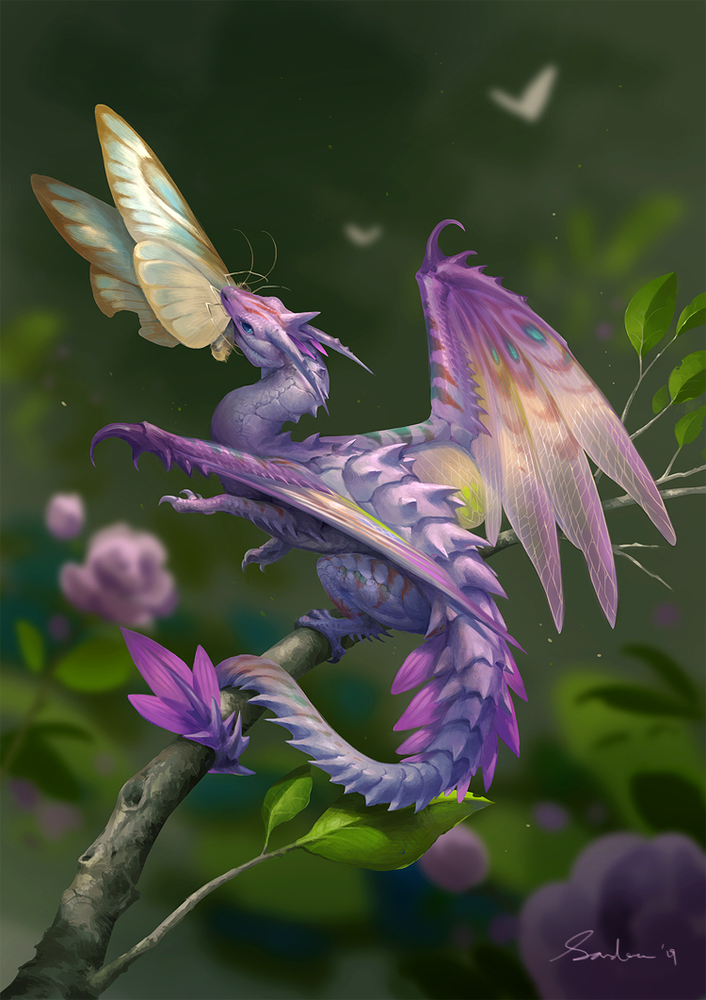

Western Dragons are dragons with four legs and a pair of wings, i.e. six limbs. This makes them different from any other kind of vertebrate. How this is possible is discussed in the article regarding flight. The term Western Dragon comes from the Dragonology-series of books, which labeled various types of European dragons. It is also a generic term for describing any and all European dragons in legends and folklore, including, but not limited to, dragons such as Wyverns, the Tarasque, Krak's Dragon and Russian and Slavic dragons such as Zmey Gorynych. In Japan, all dragons from western myths (Wester Dragons, Wyverns) are called doragon (jap. ドラゴン), to separate them from eastern dragons, called ryū (jap. 竜)
In older illustrations, such as those from the Middle Ages, most dragons resembled winged lizards with talons and serpentine tails, but with wings far too small to be reasonably capable of flight. Later, these designs influenced early reconstructions of dinosaurs. When it became known that dinosaurs weren't sluggish, lizard-like animals but stood upright like modern birds and mammals, this influenced fantasy-dragons, so that they were depicted as standing upright, too. Today, most western dragons in fantasy look somewhat dinosaur-like.
FAE Fairy Dragons are a somewhat uncommon subtype of dragon found in fantasy works. They're typically represented as tiny dragons — normally in the Shoulder-Sized Dragon range if not smaller — with insect wings (usually butterfly ones) similar to those attributed to fairies.In personality they are generally nicer, more playful, and more carefree than "true" dragons and much more likely to help the heroes. They often have ties to fairies as well as other dragons, and they may be associated with elves as well. While they might have breath weapons like other dragons, these are rarely directly harmful. They are known to breathe out gases that induce euphoria, confusion or other addled states of mind, although a healing breath isn't unheard of. Another notable trait of theirs is that among the dragons, they are the most likely to be attuned to or able to cast magic.
BACK TO MAP